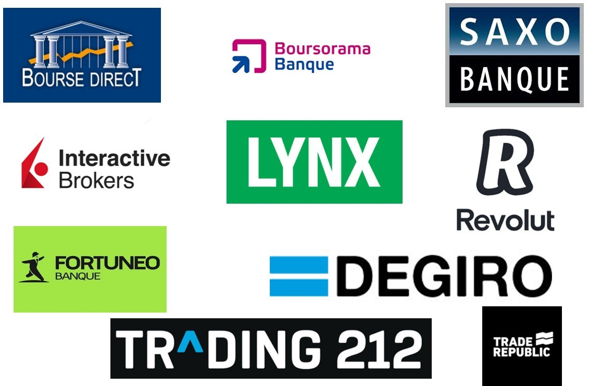
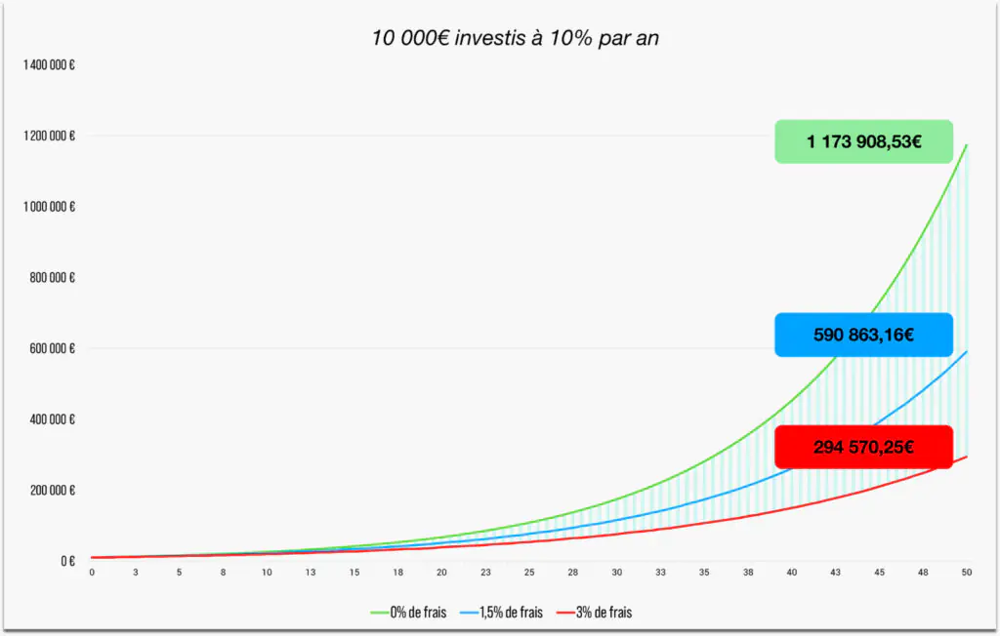
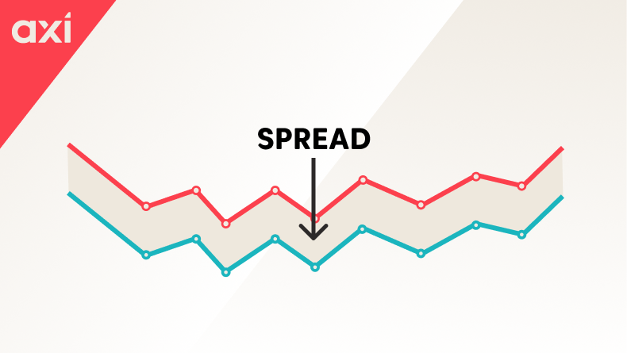

Une fois votre stratégie de sélection d'actions maîtrisée et votre enveloppe fiscale définie, il reste une étape charnière, souvent négligée par les investisseurs amateurs : la sélection minutieuse de votre courtier (ou broker). C'est l'infrastructure technologique et légale qui fera le pont entre votre capital et les marchés boursiers mondiaux. Ne vous y trompez pas : confier l'épargne d'une vie à un intermédiaire nécessite un audit rigoureux. Un mauvais choix à ce stade ne se limite pas à une interface peu intuitive ; il peut se traduire par une hémorragie silencieuse de votre performance à cause de frais cachés abyssaux, ou pire, par un risque majeur sur la sécurité même de vos avoirs.
Le marché actuel est inondé d'offres alléchantes, promettant la gratuité absolue et des interfaces ludiques. Mais en finance, la gratuité n'existe pas. Si vous ne payez pas le produit, c'est que vous êtes le produit. Explorons en profondeur l'anatomie d'un courtier d'excellence et les critères institutionnels que vous devez exiger.

1. Le Socle Non Négociable : Sécurité, Régulation et Propriété
L'esthétique de l'application mobile est secondaire. La première chose que vous devez auditer chez un courtier, c'est son armature juridique. Voici les garde-fous fondamentaux à valider systématiquement :
- Un agrément strict par une autorité de premier plan : Le monde de la finance attire les acteurs peu scrupuleux. Votre courtier doit impérativement opérer sous la supervision des gendarmes financiers européens les plus stricts. Pour les résidents belges, il s'agit de la FSMA (Autorité des services et marchés financiers). Côté français, l'AMF (Autorité des Marchés Financiers) ou l'ACPR font foi. Une régulation par la BaFin en Allemagne ou l'AFM aux Pays-Bas constitue également un excellent gage de sérieux.
- La garantie institutionnelle des dépôts : Conformément à la réglementation européenne, les espèces (vos liquidités non encore investies) déposées chez votre courtier doivent bénéficier d'une protection légale. En cas de défaillance systémique de la banque dépositaire partenaire du courtier, ce mécanisme assure la restitution de vos fonds à hauteur de 100 000 €. Assurez-vous que cette garantie est explicite dans les conditions générales.
- La ségrégation des actifs et la détention réelle : C'est le point crucial. Vous devez acheter réellement les actions (l'actif sous-jacent). Fuyez de toute urgence les plateformes spécialisées dans les CFD (Contracts for Difference), qui ne sont que des paris synthétiques contre le courtier lui-même. Un broker sérieux utilise des comptes dits "omnibus" ou de "ségrégation" : vos titres sont inscrits dans une entité juridique strictement séparée du bilan de l'entreprise du courtier. Ainsi, si le broker fait faillite, ses créanciers n'ont aucun droit de regard sur vos actions Microsoft ou LVMH. Elles vous appartiennent de plein droit.
- La réputation et l'historique de marché : Les start-ups fintechs peuvent être séduisantes, mais la gestion de patrimoine exige de la résilience. Privilégiez les institutions qui ont traversé plusieurs crises financières, qui affichent une transparence totale sur leurs propres bilans et qui gèrent des milliards d'euros d'encours clients (AUM).
2. L'Anatomie des Frictions Tarifaires (Et le déclin des banques)
La règle d'or du Quality Investing s'applique aussi aux intermédiaires : contrôlez drastiquement vos coûts. Les banques traditionnelles (qui facturent des droits de garde annuels et des commissions d'intervention en pourcentage fixe) sont structurellement inadaptées à la constitution d'un portefeuille boursier moderne. Elles détruiront la magie de vos rendements composés.

Pour évaluer un courtier en ligne, vous devez analyser au microscope sa grille tarifaire et traquer les frais périphériques :
- Les frais de courtage (Commissions) : C'est le coût frontal facturé lors de l'exécution d'un ordre d'achat ou de vente. Aujourd'hui, un courtier compétitif facture ce service autour de 1€ à 3€ par transaction, offrant parfois la gratuité sur certaines places boursières.
- Les frais de change (FX) : C'est l'un des pièges les plus lucratifs pour les courtiers. Étant donné que notre stratégie requiert l'achat d'actions américaines, vous devrez convertir vos euros en dollars. Certains brokers affichent un courtage gratuit, mais appliquent une marge de change (markup) de 0,50% ou plus, ce qui ruine immédiatement l'équation.
- Le Spread (L'écart Bid/Ask) : C'est la différence mathématique entre le prix auquel le marché est prêt à vous acheter l'action, et celui auquel il est prêt à vous la vendre. Les courtiers dits "Zéro Commission" élargissent artificiellement ce spread (Payment for Order Flow) pour se rémunérer de manière invisible. L'exécution de vos ordres s'en trouve dégradée.
- Les frais administratifs annexes : Retraits d'espèces vers votre compte bancaire, inactivité prolongée, ou encore frais de connexion aux différentes bourses mondiales. Ces petits prélèvements mensuels peuvent rapidement s'accumuler.

La citation à retenir 💬
"Montrez-moi les incitations, et je vous montrerai le résultat. Ne demandez jamais à votre coiffeur si vous avez besoin d'une coupe de cheveux."
— Charlie Munger
3. Les Pratiques Cachées : Prêt de Titres et Gamification
L'industrie du courtage regorge de mécanismes invisibles pour monétiser votre capital et votre attention. En tant qu'investisseur conscient, vous devez impérativement les identifier pour ne pas tomber dans leurs pièges :
- Le Prêt de Titres (Stock Lending) : C'est le secret de Polichinelle des courtiers low-cost. Pour compenser l'absence de frais de courtage, ils se rémunèrent en prêtant vos actions à des fonds spéculatifs qui parient à la baisse (Short-Sellers). Bien que les courtiers exigent des collatéraux en garantie, cela ajoute un risque de contrepartie. À titre d'exemple, Degiro propose ce mécanisme pour baisser ses tarifs. Heureusement, il n'est pas obligatoire : vous pouvez (et devriez) opter pour un profil de compte Basic chez eux, qui interdit formellement le prêt de vos titres à des tiers.
- La Gamification et la tentation de l'Over-trading : Les interfaces ultra-colorées, les notifications intempestives et les pluies de confettis virtuels à chaque transaction ne sont pas là pour faire joli. Elles reprennent les codes psychologiques addictifs des casinos. Le modèle économique d'un courtier repose sur le volume de transactions. Leur but ultime est que vous passiez votre temps à acheter et revendre compulsivement. Or, votre but à vous est exactement l'inverse : acheter d'excellentes entreprises et les conserver religieusement.
La citation à retenir 💬
"Wall Street gagne son argent sur l'activité. Vous gagnez le vôtre sur l'inactivité."
— Warren Buffett
4. Architecture Technique et Confort Opérationnel
Une fois les critères sécuritaires et tarifaires validés, la profondeur fonctionnelle de la plateforme fera la différence au quotidien :
- L'investissement fractionné (Fractions d'Actions) : C'est une innovation majeure. Permettre l'acquisition de 0,1 ou 0,5 action d'une entreprise s'échangeant à des centaines de dollars offre une capacité de diversification immédiate et puissante, indispensable pour les investisseurs disposant d'un budget mensuel contraint.
- L'univers d'investissement : L'architecture de votre broker doit être ouverte. Vous devez avoir un accès fluide et direct au marché américain (NYSE, NASDAQ), aux principales places européennes (Euronext, Xetra), ainsi qu'à un vaste catalogue d'ETFs et potentiellement d'obligations souveraines et d'entreprises.
- Excellence du Service Client (SAV) : Dans la gestion patrimoniale, l'attente est inacceptable. Le support technique doit être réactif, proactif et capable de répondre à des problématiques pointues de transfert ou de fiscalité, idéalement dans votre langue de résidence.
- L'automatisation fiscale locale : Un courtier optimisé pour votre pays vous déchargera d'un lourd fardeau administratif. À titre d'exemple pour les investisseurs belges, la déclaration et le paiement de la TOB (Taxe sur les Opérations de Bourse) incombent légalement au contribuable. Des plateformes comme Degiro intègrent le calcul et le reversement de cette taxe à l'État de manière totalement automatisée.
⚠️ L'Avertissement Majeur : La Prison des Frais de Transfert
Je ne le répéterai jamais assez : choisissez votre courtier avec une vision patrimoniale à 30 ans. Mettre fin à la relation avec votre broker pour migrer votre portefeuille vers une institution plus robuste peut s'avérer financièrement destructeur. Je partage ici ma propre expérience : ayant constitué mes premières lignes chez Degiro, j'ai récemment souhaité consolider mes actifs vers le courtier institutionnel Interactive Brokers (IBKR). Or, les frais de sortie sont facturés par ligne (par entreprise détenue). Pour procéder au transfert de seulement 6 positions boursières, la facturation exigée s'élève à plus de 300 € !
La leçon est claire : Une analyse rigoureuse des conditions de sortie et des frais de transfert (outbound transfer fees) dès le premier jour est primordiale pour ne pas vous retrouver l'otage d'une politique tarifaire asymétrique.
5. Le Verdict : Mes Recommandations Stratégiques
Après une décennie sur les marchés et l'audit de dizaines d'infrastructures de courtage, l'écosystème européen est aujourd'hui dominé par deux acteurs majeurs, chacun excellant dans son propre paradigme :
Pour l'amorçage patrimonial et l'investissement automatisé : Trade Republic 🚀
C'est l'outil par excellence pour l'investisseur particulier en phase d'accumulation. Son ergonomie est redoutable d'efficacité.
Ses avantages compétitifs : Une tarification forfaitaire agressive de 1€ par ordre, l'accès complet aux fractions d'actions, et surtout, un moteur d'investissement programmé automatisé (Plans d'épargne) totalement dénué de frais. C'est l'arme absolue pour appliquer une stratégie de Dollar Cost Averaging (DCA) sans le moindre effort cognitif.
👉 Dans une démarche de transparence, si l'architecture de cette plateforme correspond à vos besoins, vous pouvez initier l'ouverture de votre compte via mon lien d'affiliation : Accéder à l'interface Trade Republic.
Pour la gestion de portefeuilles significatifs et institutionnels : Interactive Brokers (IBKR) 🏛️
Nous parlons ici du titan mondial de l'industrie. L'interface (TWS) s'apparente à un véritable cockpit d'avion, ce qui implique une courbe d'apprentissage abrupte, mais la robustesse de l'infrastructure est inégalée.
Ses avantages compétitifs : Il s'agit du courtier détenant le volume d'actifs sous gestion (AUM) le plus imposant du secteur. Il propose la grille tarifaire la plus compressée au monde, que ce soit pour les commissions de courtage ou les frais de conversion de devises au taux interbancaire pur. Pour un portefeuille dépassant les six chiffres, c'est l'environnement le plus sécurisé et le plus performant disponible sur le marché.
🔑 Ce qu'il faut retenir
Votre courtier est le pont entre votre capital et les marchés : la sécurité (Régulation AMF/FSMA, garantie de 100 000 €, détention réelle des titres) est le critère non négociable numéro un.
Fuyez les banques traditionnelles. Traquez impitoyablement les frais visibles et invisibles (courtage, frais de change, spread) et méfiez-vous des pratiques cachées (prêt de titres, gamification) qui visent à vous faire sur-trader.
Anticipez l'avenir car changer de plateforme en cours de route coûte très cher en frais de transfert. Pour débuter, automatiser et investir de petits montants, Trade Republic est le choix optimal. Pour les portefeuilles massifs exigeant les frais institutionnels les plus bas, Interactive Brokers (IBKR) est la référence absolue.